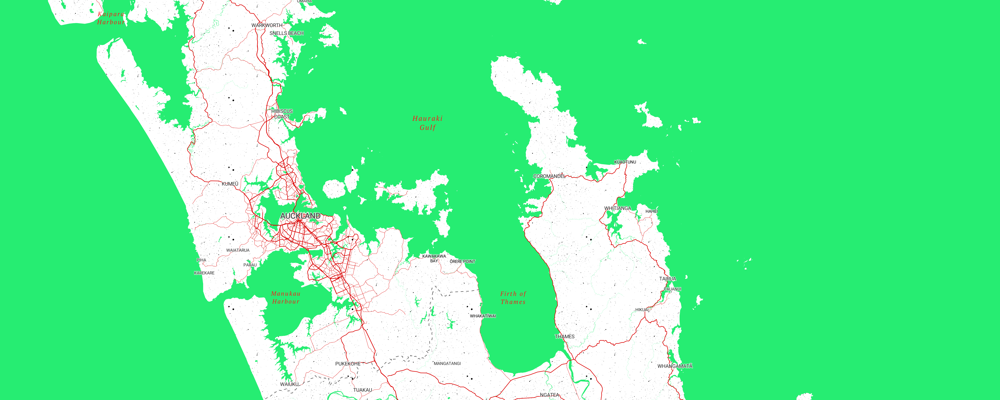
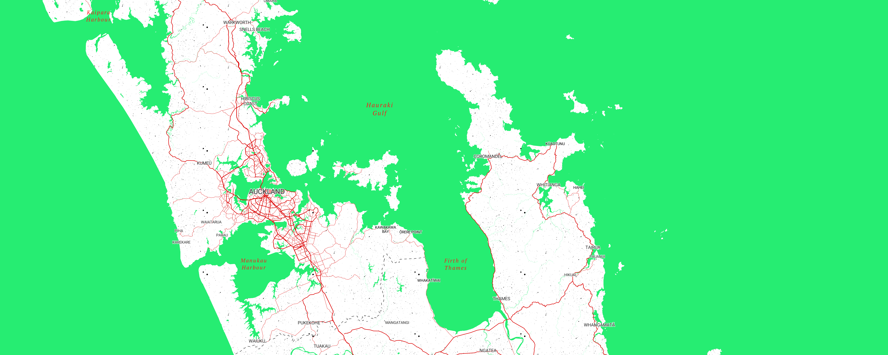
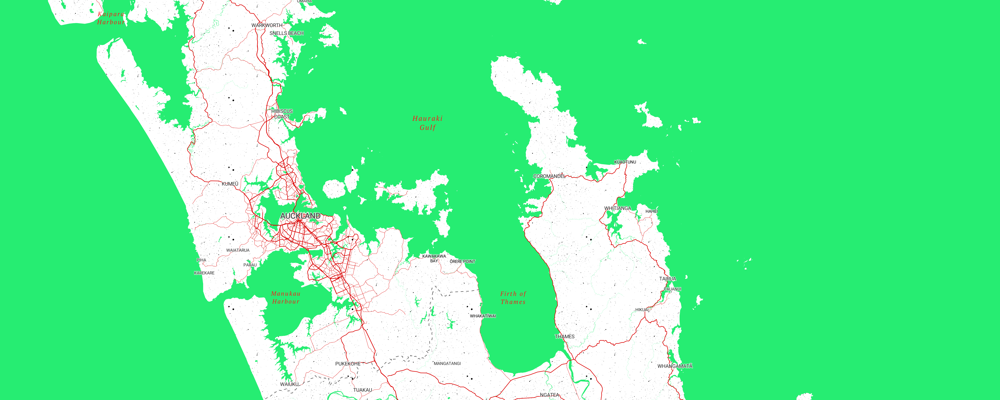
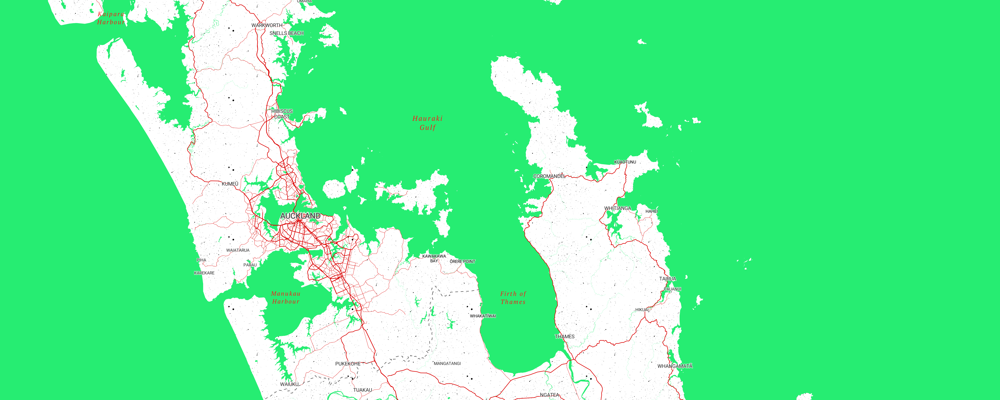

A Slime World
This map is inspired from the collaborative album Slime Language, by Young Thug and Young Stoner Life Records.

The map makes use of the vibrant colors like green, red, and blue from the different album covers along with the fonts from the track list.
 


 

Here is Milwaukee, Wisconsin which contains many blazing red roadways.
This is rural Canada where you can see the grainy texture that is seen on Slime Language.
In Europe, you can see the countries' names are written in sign language just like the sign language spelling on the album.
Over in New Zealand, slimey water features are seen and labeled.


Here is the full map
Credits:
Map created with Mapbox Studio
Data from openstreetmap